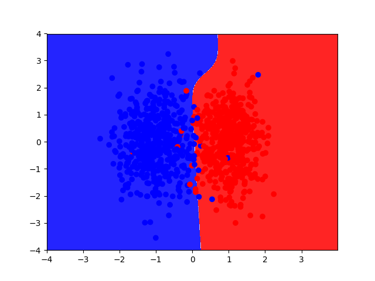
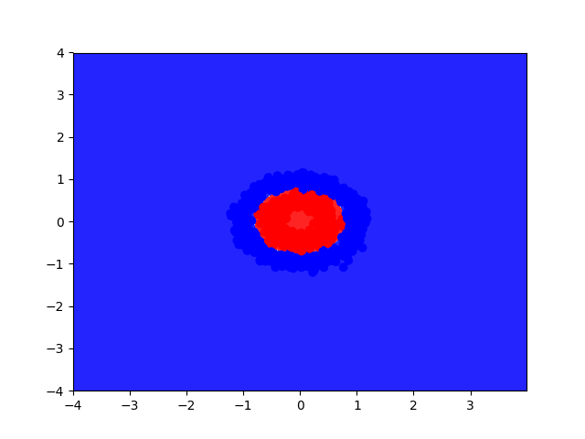

Problem Definition
Give a concise description of current problem. For instance, what needs to be solved and why it is useful? Do you make any assumptions? What are the difficulties?
In this assignment, we are trying to implement both a linear regression classifier and a neural network, and then training those two classes so that they can make informed decisions based on a given input. This is useful for plenty of applications, one being image recognition. You can take a neural network, train it using already classified inputs, and then use that trained neural network to recognize other images. The difficulties really are mostly implementing the actual neural network itself, especially when it comes to having more than one hidden layer.
Here are the learning objectives:
Method and Implementation
Give a concise description of the implemented method. For example, you might describe the motivation of current idea, the algorithmic steps or any formulation used in current method.
My group and I more or less just followed the skeleton code given to us, and the pseudocode that was provided on Piazza.
For logistic regression classifier, we take in a learning rate and the dimmensions for the input and output. Using that, we were able to implement a cost computing function, and a fit function to recognize patterns from new inputs so that it can be classified based on the trained input.
We followed the above algorithm for the neural network problem, except we accounted for the hidden layer weights and biases. We followed the backwards propagation algorithm that was taught to us in lecture.
Briefly outline the functions you created in your code to carry out your algorithmic steps described above.
For the logistic regression classifier:
For the neural network, it's basically the same functions as above - the implementations have some variation.
Experiments
Describe your experiments, including the number of tests that you performed, and the relevant parameter values.
Define your evaluation metrics, e.g., detection rates, accuracy, running time.
The first experiment was switching between linear and non linear data for the Logistic Regression Classifier. Here are the results:

Here is the result using non linear data:

The second experiment was to change the number of nodes in the hidden layer for the Neural Network class. Here is the result of having just 2 nodes:

Here is the result of having 10 nodes:

The third experiment was trying linear and nonlinear data for the neutral network using 10 nodes. The results for linear data are the same as the above image.
Here are the results using nonlinear data with 10 nodes in the hidden layer:

We also experimented with training the Logistic Regression classifier to recognize digits, the confusion matrix and accuracy is shown below:

Here are the results using the neural network with 10 nodes in the hidden layer:

In both cases, the accuracy was determined by running the predict function on the X_test values (given to us) to get the predicted y values. We then would compare this to the actual y_test values to get an accuracy value.
Results
List your experimental results. Provide examples of input images and output images. If relevant, you may provide images showing any intermediate steps
Question 2: Can your logistic regression classifier learn non-linear decision boundaries? Why or why not?
No it can't because the output is determined by a linear function: output = x_input * weights + bias.
Question 3: Can your neural network model (with one hidden layer) learn non-linear decision boundaries? Why or why not?
Yes it can because the output is determined by a nonlinear activation function, which was the sigmoid function in our case. This means that our neural network is not limited to just linear data, which is the case with the linear regression classifier.
Question 4: What effect does learning rate have on how your neural network is trained? Illustrate your answer by training your model using different learning rates. Provide plots illustrating the total cost of your model over time for different settings of the learning rate.
Too high of a learning rate will cause the accuracy of the neural network to decline, which is shown below with the following image:
Question 5: What effect does the number of nodes in the hidden layer have on how your neural network is trained? Illustrate your answer by training your model using different numbers of hidden layer nodes. Provide plots showing the decision boundaries learned by your model for different settings of the number of nodes in the hidden layer.
As we add more nodes to the hidden layer, the neural network becomes more accurate. This is shown in the image below:
Discussion
Discuss your method and results:
- What are the strengths and weaknesses of your method?
- Do your results show that your method is generally successful or are there limitations? Describe what you expected to find in your experiments, and how that differed or was confirmed by your results.
- Potential future work. How could your method be improved? What would you try (if you had more time) to overcome the failures/limitations of your work?
Conclusions
Based on your discussion, what are your conclusions? What is your main message?
Credits and Bibliography
Cite any papers or other references you consulted while developing your solution. Citations to papers should include the authors, the year of publication, the title of the work, and the publication information (e.g., book name and publisher; conference proceedings and location; journal name, volume and pages; technical report and institution). Material on the web should include the url and date of access.
Sources used:
Credit any joint work or discussions with your classmates.